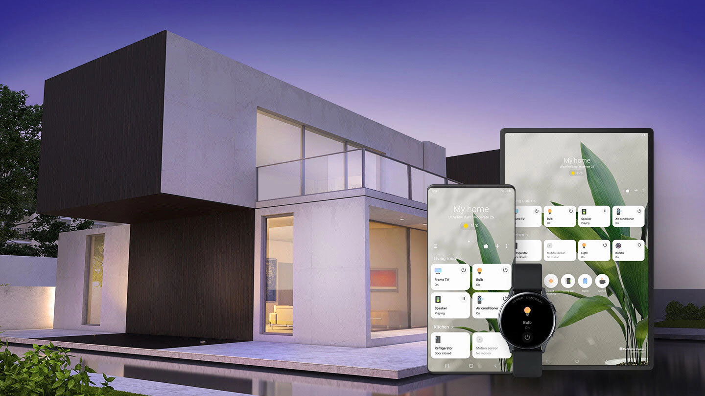
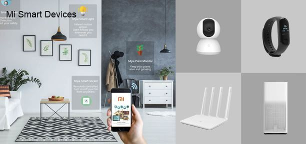

<div class="container" style="margin-top:30px">
    <div class="row">
      <div class="col-sm-4">
        <ul class="nav nav-pills flex-column">
          <li class="nav-item">
            <a class="nav-link shadow p-2 mb-2 bg-primary rounded text-light" href="#samsung">Samsung Smart Things</a>
          </li>
          <li class="nav-item">
            <a class="nav-link shadow p-2 mb-2 bg-info rounded text-light" href="#xiaomi">Xiaomi okos otthon</a>
          </li>
          <li class="nav-item">
            <a class="nav-link shadow p-2 mb-2 bg-body rounded" href="#chameleon">Chameleon Smart Home</a>
          </li>
        </ul>
        <hr class="d-sm-none">
      </div>
      <div class="col-sm-8">
        <h2>Miért jó az okos otthon?</h2>
        
        <p>Ahogy a világ fejlődik, úgy fejlődik vele a technika és az eszközök is. Ma már egyre lustábbak leszünk, mert az egyre jobban terjedő okoseszközök segítségével akár az ágyunkból is fel és lekapcsolhatjuk a lámpát vagy elhúzhatjuk a függönyt. Ez a fejlődés nem minden esetben hátrány. Vegyünk egy nagyon fárasztó napot, amikor nagyon úgy tűnik, hogy későn érsz haza. Milyen rossz lenne ha a hideg lakásba kellene hazaérned. Erre megoldás az okosotthon kialakítás. A telefonodról befűtheted a lakást akár egy gomnyomással.</p>
        <p>Ez a lényege ennek az oldalnak. Be szeretném mutatni, hogy az okosotthon kialakításának vannak pozitív hatásai is. Ha esteleg valaki úgy dönt, hogy megvalósít egy ilyet tervet, így segítségére lehetek.</p>
        <p>Az automatizált otthonok számos előnnyel járnak, azonban leggyakrabban csak pár fő érvet emlegetnek a használatuk mellett.
          Az egyik az optimalizált energiafelhasználás. Az okosotthonok nagyon gazdaságosak, ugyanis a rendszert a szokásainknak megfelelően taníthatjuk, valamint a szenzorok érzékelik a jelenlétünket is, így például mindig energiatakarékosan fűthetjük fel otthonunkat az optimális hőmérsékletre, és nem fordul elő többet az sem, hogy égve felejtjük valamelyik lámpát, vagy bekapcsolva marad a televízió az üres szobában.
          Szintén fontos szempont a kényelem: az intelligens otthoni rendszerek megtanulják szokásainkat, és hozzánk “idomulnak” – számos funkciót már automatikusan végeznek el, így nem kell ilyennel foglalkoznunk.
          Az optimalizált energiafelhasználás és a kényelem mellett ott van még a biztonság is amit meg kell említenünk. Egy okosházat könnyedén felügyelhetünk távolról is, így ha riasztónk jelzett, csak megnyitjuk az alkalmazást telefonunkon, és máris szemügyre vehetjük a biztonsági kamerák felvételeit. Ha esetleg elfelejtettük bekapcsolni a riasztót, akkor sincs gond: egy kattintással gondoskodhatunk értékeink biztonságáról.</p>
        <br>
        <h2>Okoseszközök</h2>
        <h5></h5>
        
        <p>Okoseszközöket fejlesztő vállalatok</p>
        <p>Hogy segítsem az okosotthonok kialakítását a következő „valamikon” bemutatok pár ismertebb céget, akik létrehoztak és kifejlesztettek okoseszközöket, amelyekkel könnyebbé tehetjük mindennapjainkat.</p>
        <br>
        <h2 id="samsung">Samsung</h2>
        <h5></h5>
        
        <p>Samsung</p>
        <p>A samsung az egyik legismertebb elektronikai eszközöket gyártó multinacionális cég. A vállalat 2014 augusztusától kezdett el fejleszteni és gyártani ilyen célra eszközöket. Ezeket a készülékeket egy szoftveren keresztül lehet vezérelni. Ezen a linken többet megtudhattok róla: 
          <br><a class="btn btn-primary stretched-link mt-2" href="https://www.samsung.com/hu/apps/smartthings/">Samsung Smart Things</a>
        </p>
        <br>
        <h2 id="xiaomi">Xiaomi</h2>
        <h5></h5>
        
        <p>Samsung</p>
        <p>A Xiaomi okostelefonokat, alkalmazásokat és fogyasztói elektronikai termékeket tervez, gyárt és értékesít. A vállalat 2010-ben alapult meg. 2015 áprilisában kezdte el bevezetni a termékeket a piacra. A Xiaomi által forgalmazott termékek itt találhatóak meg:  
          <br><a class="btn btn-primary stretched-link mt-2" href="https://xiaomi.hu/okos-otthon">Xiaomi okos otthon</a>
        </p>
        
        <br>
        <h2 id="chameleon">Chameleon Smart Home</h2>
        <h5></h5>
        
        <p>Samsung</p>
        <p>Ez egy kevésbé ismert magyar okosotthon rendszer. Oldalukon akár saját ajánlatot is kérhetsz saját igényeidhez mérve. Pontosabb információkat a weboldalukon találsz:   
         <br> <a class="btn btn-primary stretched-link mt-2" href="https://chameleon-smarthome.com/">Chameleon Smart Home</a>
        </p>
        
      </div>
      
    </div>
  </div>
    
  </body>
  </html>
  